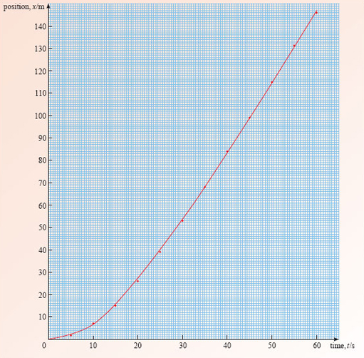
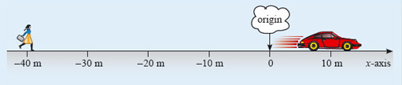
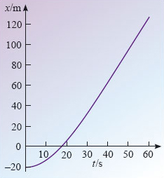
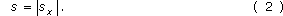
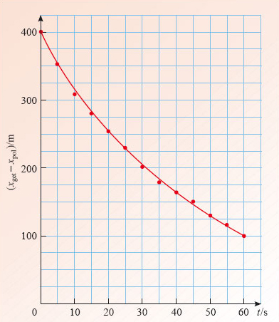

2 Positions along a line¶
2.1 Simplification and modelling¶
Everyday experience teaches us that unconfined objects are free to move in three independent directions. I can move my hand up or down, left or right, backwards or forwards. By combining movements in these three directions I can, at least in principle, move my hand to any point in space. The fact that there are just three independent directions, and that these suffice to reach any point, shows that the space in which my hand moves is three-dimensional.
The motion of a large object, such as an aeroplane, moving in three-dimensional space is very difficult to describe exactly. The aeroplane may flex, rotate and vibrate as it moves, and there may be complicated changes taking place within it. To avoid such complexities at the start of our investigation of motion we shall initially restrict our attention to objects that move in just one dimension along a line.
We shall treat the object concerned as a particle, that is, a point-like concentration of matter that has no size, no shape and no internal structure.
Treating a real object, such as an aeroplane, as though it is a particle is clearly a simplification. Real objects certainly do have size, shape and internal structure, but such details can often be neglected in specific contexts. Making simplifications of this kind is an important part of the skill of scientific modelling in physics. A good model uses the well-defined concepts of physics to represent the essential features of a problem while omitting the irrelevant details. The trick is not to oversimplify. The model should be as simple as it can be, but no simpler. Just what this entails will depend on the problem being analysed. For example, the use of the year as a unit of time is a result of the orbital motion of the Earth around the Sun. This orbital motion is described quite easily while treating the Earth as a particle. The Earth’s diameter is about 10 000 times smaller than the distance between the Earth and the Sun, so a particle model is a very good approximation in this case. However, a particle model of the Earth cannot account for the distinction between day and night since that depends on the rotation of the Earth.
In this course we shall only consider problems that can be adequately modelled by particles moving in one dimension, that is, along a straight line.
Describing the motion of a particle moving along a line may sound like a fairly simple undertaking, but, as you will see, it will present plenty of challenges and will allow us to gain significant insights into the operation of systems such as zero gravity drop-towers and vertical-drop roller-coasters.
Question 1¶
Question¶
List some more examples of real motions that might, in your opinion, be reasonably well modelled by particles moving along a line.
Answer¶
Your list might well include items such as: the motion of a passenger on a train, or in a plane or in any other vehicle, as long as it is the passenger’s overall position that is important, and not their posture or internal movement. You might also have listed the vehicles themselves, provided the same conditions apply. Indeed, you might list almost anything, including the Earth or the Sun, provided you are considering a context in which the moving object can be treated as point-like.
The branch of physics that is concerned with the description of motion is known as kinematics. Kinematics is not concerned with forces, nor with the causes of motion; those topics are central to the study of dynamics. Typical questions that we might ask about the kinematics of a particle are:
Where is the particle?
How fast is it moving, and in what direction?
How rapidly is it speeding up or slowing down?
How such questions are to be answered is the main concern of the rest of this course.
2.2 Describing positions along a line¶
To take a definite case, consider a car moving along a straight horizontal road. The car can be modelled as a particle by supposing the particle to be located at, say, the midpoint of the car. It is clearly convenient to measure the progress of the car with respect to the road, and for this purpose you might use the set of uniformly spaced red-topped posts along the right-hand side of the road (see Figure 5). The posts provide a way of assigning a unique position coordinate to the car (regarded as a particle) at any instant. The instantaneous position coordinate of the car is simply the number of the nearest post at that moment.

Figure 5: A long straight road and a set of uniformly spaced posts along it
When used in this way the posts provide the basis of a one-dimensional coordinate system - a systematic means of assigning position coordinates along a line. Taken together, the posts constitute an axis of the system; a straight line along which distances can be measured. One point on the axis must be chosen as the origin and assigned the value 0. Points on one side of the origin can then be labelled by their distance from the origin (10 m or 20 m say), while points on the other side are labelled by minus their distance from the origin (−10 m or −20 m for example). Conventionally, we might represent any of these values by the algebraic symbol x, in which case it would be called the x-coordinate of the corresponding point on the axis, and the axis itself would be called the x-axis.
Figure 6 shows an example, corresponding to a particular choice of origin, and with x increasing smoothly from left to right, as indicated by the arrow. Note that the numbers x increase from left to right everywhere on the x-axis, not only on the positive segment. Thus for example −10 is larger than −20, and so if you subtract −20 from −10 you get −10 − (−20) = 10, a positive number. At the time illustrated the car is at x = 30 m, and a pedestrian (also modelled as a particle) is at x = −20 m. Notice that it is essential to include the units in the specification of x. It makes no sense to refer to the position of the car as being ‘30’, with no mention of the units, i.e. metres. In one dimension, the specification of a physical positionx consists of a positive or negative number multiplied by an appropriate unit, in this case the metre.

Figure 6: A choice of x-axis. Setting up the axis involves choosing an origin and a direction of increasing x (from left to right). Distances are measured in metres (m)
It is worth emphasising that setting up an x-axis involves some degree of choice. The origin and the direction of increasing x are both chosen in an arbitrary way, usually so as to simplify the problem. The choice of units of measurement is also arbitrary, though usually guided by convention. Even the decision to call the axis an x-axis is arbitrary; x is conventional, but not compulsory. It does not really matter what choices are made, but it is essential to stick to the same choices throughout the description of a given motion.
The conventions about units deserve special attention, so they have been set apart from the main text in Box 1.
Box 1 Introducing SI units¶
The standard way for scientists to measure lengths, distances and positions is in metric units (metres, millimetres, kilometres, etc., as opposed to miles, feet or inches). This is part of an internationally agreed system of units known as SI (which stands for the Système Internationale). This course uses SI units throughout.
The standard SI abbreviation for the metre is m. Since 1983 the speed of light travelling in a vacuum has been defined to be exactly
2.99792458 × 108 metres per second.
This is an internationally agreed definition, not the result of a measurement, so the metre may be similarly defined as the distance that light travels through a vacuum in (1 / 299 792 458) second. Typical lengths of interest to physicists range from the diameter of the atomic nucleus, which is about 10−15 m, to the diameter of the visible Universe, which is about 1027 m.
In view of the wide range of lengths that are of interest, it would be inconvenient to use only the metre for their measurement. To avoid this there are standard SI multiples and SI submultiples that may also be used. You will already be familiar with some of these; the prefix kilo means 103 as in kilometre and the prefix milli stands for 10−3 as in millimetre. Table 1 gives the standard SI multiples; you are not expected to remember all of them but it is certainly worth learning the more common ones.
Another example of an SI unit is the second which is the unit of time. The standard abbreviation for the second is s. (Notice that, like m, this symbol is always lower case. The distinction does matter.) The time values of interest to experimental physicists range from the 10−24 s duration of certain events in subatomic physics, to the present age of the Universe, which is about 1018 s, though speculations about the birth and death of the Universe have involved times ranging from 10−45 s to 10140 s, or more.
Multiple | Prefix | Symbol for prefix | Submultiple | Prefix | Symbol for prefix |
|---|---|---|---|---|---|
1012 | tera | T | 10−3 | milli | m |
109 | giga | G | 10−6 | micro | μ |
106 | mega | M | 10−9 | nano | n |
103 | kilo | k | 10−12 | pico | p |
100 | 10−15 | femto | f |
Having chosen a convenient x-axis and selected units of length and time, we are well placed to describe the position of a particle as it moves along a straight line. All we need to do is to equip ourselves with a clock, choose an origin of time (that is, an instant at which the time t = 0 s) and note the position of the particle at a series of closely spaced intervals. Table 2 shows typical results for the kind of car in Figure 6. The use of an oblique slash (/) or solidus in the column headings in Table 2 is another convention. It reminds us that the quantity to the left of the solidus is being measured in the units listed on the right of the solidus.
t/s | x/m |
|---|---|
0 | 0 |
5 | 1.7 |
10 | 6.8 |
15 | 15 |
20 | 26 |
25 | 39 |
30 | 53 |
35 | 68 |
40 | 84 |
45 | 99 |
50 | 115 |
55 | 131 |
60 | 146 |
In fact, if you remember that a physical quantity such as x represents the product of a number and a unit of measurement, as in 20 m, for example, you can see that x/m may be thought of as indicating ‘the value of x divided by 1 metre’, which would just be the number 20 if x was 20 m. It therefore makes good sense to see that the entries in the x/m column of Table 2 are indeed just numbers. In effect, x/m indicates that the units have been divided out. Take care always to remember that symbols such as x, that are used to represent physical quantities, conventionally include the relevant units while quantities such as x/m are purely numerical.
2.3 Position-time graphs¶
Tables do not give a very striking impression of how one thing varies with respect to another. A visual form of presentation, such as a graph, is usually much more effective. This is evident from Figure 7, which shows the graph obtained by plotting the data in Table 2 and then drawing a smooth curve through the resulting points.

Figure 7: A position-time graph based on the results in Table 2
The smooth curve drawn in Figure 7 is called the position-time graph of the car’s motion. It can be used to read off the position of the car at any instant of time, or to find when the car passes a certain point. In graphs such as this, it is conventional to plot the time t along the horizontal axis. The vertical axis is used for the position x. This is just a standard way of displaying information about quantities that depend on time; it does not imply that the x-axis of Figure 6 is vertical!
Question 2¶
Question¶
Use Figure 7 to estimate the position of the car at t = 32 s.
Estimate the time at which the car reaches the position shown in Figure 6.
Answer¶
From Figure 7, the position at t = 32 s is 59 m.
In Figure 6 the car is at x = 30 m. According to Figure 7, the time corresponding to x = 30 m is 21 s.
A position-time graph provides a very straightforward way of describing motion along a line. It is easy to construct from a table of measurements, and easy to use to determine details of the motion. However, you should realise that the appearance of the graph depends on the precise choice made for the x-axis. Figure 8 shows a new coordinate system in which the origin is 20 m to the right of the origin in Figure 6. As a result, the position coordinate of the car, measured in this new system, at any of the times listed in Table 2, will be 20 m less than the value given in the table, and the corresponding position-time graph will look like Figure 9. The car now starts at x = −20 m, and the steadily increasing x-coordinate only becomes positive after t = 8 s. Different choices of origin simply shift the position-time graph upwards or downwards, without changing its shape.

Figure 8: An alternative choice of x-axis with the origin moved 20 m to the right

Figure 9: The position-time graph when the position of the car is measured relative to the x-axis of Figure 8
Question 3¶
Question¶
What change in the description of the motion would shift the position-time graph to the right or the left, without changing its shape?
Answer¶
The whole graph could be shifted to the right or the left (without altering its shape) by choosing the origin of time (t = 0 s) to be earlier or later than that used in Table 2.
2.4 Displacement-time graphs¶

Figure 10: A police car in pursuit of a getaway car
A particle’s position, x, is always measured from the origin of the coordinate system. However, in describing real motions it is often important to know where something is located relative to a point other than the origin. Figure 10 shows a case in point; in a high-speed pursuit neither the police nor the robbers are likely to be very interested in their location relative to the origin, but both will be interested in the location of their own vehicle relative to the other. The physical quantity used to describe the location of one point relative to another is called displacement. In the case of Figure 10, the displacement of the getaway car from the police car is 400 m and the displacement of the police car from the getaway car is −400 m. In each case the displacement of a body is determined by subtracting the position coordinate of the reference body from the position coordinate of the body of interest. Thus the displacement (measured along the x-axis) of a particle with position x from a chosen reference point with position xref is given by

Notice that displacements, like positions, may be positive or negative depending on the direction of the displacement. Thus sx is always positive when x is to the right of xref and is negative when x is to the left of xref. Also note that since displacements are measured along a definite axis it makes sense to represent them by a symbol, sx, that includes a reference to that axis. This symbol may be read as ‘s subscript x’ or, more simply, as ‘s sub x’.
A special case of Equation 1 is when the reference point xref is the origin. Then xref = 0 and sx = x. Thus the displacement of a point from the origin is the position coordinate of the point. Once we know the displacement sx of one object from another, it is easy to work out the distances between those two objects. The distance is just the numerical value of the displacement, including the unit of measurement but ignoring any overall negative sign. So, when the displacement of the police car from the getaway car is sx = −400 m, the distance between them is s = 400 m. We describe this simple relationship between distance and displacement by saying that the distance between two objects is given by the magnitude of the displacement of one from the other, and we indicate it mathematically by writing

The two vertical bars | | constitute a modulus sign and indicate that you should work out the value of whatever they enclose and then take its magnitude (i.e. ignore any overall minus sign).
Question 4¶
Question¶
In Figure 8, what is the displacement sx of the car from the pedestrian, and what is the distance s between them?
Answer¶
sx = 50 m, and s = 50 m.
In many circumstances it is more valuable to plot a displacement-time graph rather than a position-time graph. In order to do this you either have to know the relevant displacements at various times, or you need to know enough about the positions of both the bodies involved to work out the displacements. Table 3 contains some plausible data about the positions of the two cars in Figure 10; use it to answer the following question.
t/s | xpol/m | xget/m |
|---|---|---|
0 | −200 | 200 |
5 | −115 | 237 |
10 | −45 | 265 |
15 | 10 | 293 |
20 | 62 | 317 |
25 | 108 | 337 |
30 | 149 | 351 |
35 | 184 | 364 |
40 | 213 | 377 |
45 | 239 | 388 |
50 | 263 | 394 |
55 | 283 | 399 |
60 | 300 | 400 |
Question 5¶
Question¶
Plot a graph to show how the displacement of the getaway car from the police car depends on time.
Answer¶
Since we are interested in the displacement of the getaway car from the police car, we need to plot xget − xpol. You may find it useful to tabulate these values by adding another column (headed xget − xpol) to Table 3. The result of the plot is given in Figure 11.

Figure 11: A displacement-time graph based on Table 3
2.5 A note on graph drawing¶
There will be many occasions throughout your study of physics when you will need to draw graphs. This subsection gives some important guidelines for this activity.
Decide which is the independent variable and which the dependent variable. Plot the independent variable along the horizontal axis and the dependent variable along the vertical axis. This is purely a convention but is why, for instance, we usually plot the time along the horizontal axis of a position-time graph. It is the position that varies with time rather than the time that varies with position. Time is the independent variable since we can choose to make a measurement at any time. Position is the dependent variable.
Give the graph a title, e.g. distance versus time.
Arrange the axes so that the vertical axis increases in an upward direction and values along the horizontal axis increase to the right. This is simply a convention.
Label both axes to show which quantities are being plotted and include the units. By convention only pure numbers are plotted. The physical quantity must be divided by its units before being plotted. This means that each axis should be labelled as quantity/units. This is why in all the graphs we have drawn so far the axes have been labelled by time/s and position/m (or displacement/m).
Fill as much of the graph paper as reasonably possible. You will obtain greater accuracy if the graph is as big as possible. However, take care to use the graph paper sensibly. Graph paper usually has centimetre and millimetre squares, so it is straightforward to use 2 or 5 or 10 divisions on the paper to one physical unit. What you should avoid are multiples such as 3, 6, 7 ….
Scale the axes appropriately, especially if the numbers involved are either very large or very small. For example, if the values of time t range from 0 s to 1.0 × 10−5 s, then, rather than plotting t/s and inserting values such as 1.0 × 10−6, 2.0 × 10−6, etc. along the axis, it is usually more convenient to change the units to microseconds and plot t/μs; the values along the axis will then simply be 1, 2, 3, etc. It is also acceptable to label the axis t/10−6 s rather than t/μs if you prefer.
Plot the points clearly. If you use very small dots they may be confused with other marks on the paper. However, using very big dots is not a good idea since it is hard to tell the position of the centre. Some authors put the dots within small circles. In this course we simply use dots since it is easy to show them clearly in professionally drawn graphs.
Draw a straight line or smooth curve through the points plotted. The graphs that you draw will generally represent the smooth variation of one quantity with respect to another so a smooth curve is usually appropriate.
Question 6¶
Question¶
How many of the above guidelines did you violate in answering Question 5?
Answer¶
Only you will know the answer to this, but it is common to see graphs in which the axes have not been labelled, or the units have been omitted. This is especially true when automated graph-plotting packages are used; such packages often require special instructions if they are to show labels and units, and these are easily overlooked. If you are using such a package (or a graphical calculator), don’t forget that the line you have to plot is far from being the whole graph: axes and labels are also important.